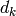

03 - ADALINE and Delta Rule¶
ADAptive LINear Element (ADALINE) vs Perceptron.
ADALINE just outputs the weighted sum directly as apposed to the Perceptron with passes that weighted sum through a threshold as well.
The ADALINE and Delta Rule¶
When the problem is not linearly separable the perceptron will fail to converge. ADALINE can overcome this difficulty by finding a best fit approximation to the target.
The ADALINE Error Function¶
We have training paris for  where K is the number of training samples, the training error specifies the difference between the output of the ADLINE and the desired target.
where K is the number of training samples, the training error specifies the difference between the output of the ADLINE and the desired target.
The error function  is defined as:
is defined as:
where  is the desired output and is the actual output from the ADLINE neurone, both for experience  .
.
Clarification:
The ADALINE neurone still calculates its output in the same way as the perceptron did, however without passing it through a threshold function:
where  is the number of inputs. This can be represented more simply. If we instead take
is the number of inputs. This can be represented more simply. If we instead take  and append it onto the end of the weight vector
and append it onto the end of the weight vector  and append a 1 to the end of the inputs vector
and append a 1 to the end of the inputs vector  we can simply write:
we can simply write:
since for , will be , which will be summed together with the other values. Mathematically this is a common format which is given the name dot product, which is denoted , so these are all the same thing:
So lets take an example, if we have a 3 dimensional input vector say and a bias (formally ) of 5 and current weights for the 3 dimensional input vector we would (using the based sum function) have the following:
If we convert the input and weight vectors to incorporate the bias we can use the dot product instead. So the inputs vector would be and the weights vector would be , now we get:
OK Back to the Error function stuff:
The difference between the actual output and the designed output () is used by the error function in order to determine how close we got to approximating the desired function/weights.
The smaller  is the closer the approximation is to the perfect function.
is the closer the approximation is to the perfect function.
So the training task is to find  such that is minimised.
such that is minimised.
The differing values of creates a so called error surface which is visualisable if there are 2 or 3 weights. In 2D this surface would appear as valleys and mountains etc. spanning the hypothesis space. Our aim is to find the point which is the lowest in that error surface.
The Gradient Descent Rule¶
If you imagine a 2D graph displaying the error surface (in this case some sort of curved line) we need to move  to a new value, such that
to a new value, such that  .
.
This is easy if you are looking at the line, you can visually pick out the lowest point. To do this programmatically and without a priori knowledge we want to travel down negative gradients.
This equates to moving in the opposite direction to the gradient, i.e. if the gradient going forward is positive (going up) we must move in the negative direction (backwards), which will take us downwards.
Mathematically we can say:
The gradient training rule is for each individual weight is:
where  is the training rate.
is the training rate.
The gradient descent training procedure is:
Initialise
 to small values (for example in the range of -1 to 1) and choose a learning rate (e.g. ).
to small values (for example in the range of -1 to 1) and choose a learning rate (e.g. ).- Until the termination condition is met, do
- For all training sample pairs input the instance
 and compute:
and compute:

For each weight
, do
- For all training sample pairs input the instance
Stochastic (Incremental) Gradient Descent¶
Also known as online mode, Least Mean Square (LMS), Widrow-Hoff, and the Delta Rule the process is as follows:
Initialise all
to small values (e.g. in the range -1 to +1), choose a learning rate (e.g. , which should be a smaller value than the one used in batch mode).Until the termination condition is met, do:
For each training sample pair compute:
Then for each weight
, do:
Training Iterations, Epochs¶
Training is an iterative process, thus training samples are used repeatedly for training. Assuming we have  training samples for , then an epoch is the presentation of all training samples to the function approximation process once.
training samples for , then an epoch is the presentation of all training samples to the function approximation process once.
The order of training sample presentation between epochs can (and should) be different, and training may take many epochs to complete.
Termination of Training¶
To terminate training, there are normally two ways:
- When a pre-set number of training epochs is reached
- When the error is smaller than a pre-set value
Further Reading¶
Chapter 4, Machine Learning, T. M. Mitchell 1997